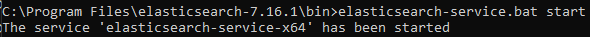
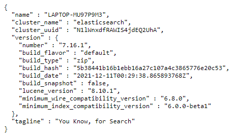

Configuración
Existen principalmente 2 archivos que se encargan de la configuración de ElasticSearch: jvm.options y elasticsearch.yml, se explicará cada una de las líneas que fueron modificadas de los parámetros estándar.
Jvm.options
Cuando se ejecuta Elastic Search se crea una maquina virtual de proceso nativo llamada Java Virtual Machine (JVM). La memoria que se asigna a esta máquina virtual se realiza automáticamente en base a los recursos del servidor y los roles del nodo. Sin embargo, al tener otros procesos en el servidor es conveniente ajustar esta memoria para no afectarlos y tener mayor control sobre el servicio de Elastic Search.
Este archivo se encuentra en la dirección C:\Program Files\elasticsearch-7.16.1\config\ La sección de interés se llama JVM heap size. Si bien es posible hacer las modificaciones sobre este archivo, como buena práctica y recomendación misma de Elastic, se crea otro archivo con mismo nombre y extensión para ubicarlo en el directorio C:\Program Files\elasticsearch-7.16.1\config\jvm.options.d
En ese archivo escribir lo siguiente:
-Xms2g
-Xmx2g
Donde el valor numérico no debe ser mayor al 50% de la memoria total del servidor y se recomienda que los dos valores sean iguales; en este caso se está asignando 2GB de memoria mínima y máxima para la máquina virtual. También por cuestiones de Java no es recomendable pasar de 32 GB.
Una vez modificado esto, iniciar el servicio de elastic search 
La comunicación se realiza por medio del puerto 9200, si se visita la dirección http://localhost:9200/ se muestra la información de la instancia: 
Siguiendo los pasos anteriores hasta este punto se puede realizar la instalación de ElasticSearch en todos los servidores que se requiera. En la siguiente sección se cubren los aspectos necesarios para la comunicación entre ellos y la implementación de seguridad.
ElasticSearch.yml
Este archivo contiene la mayor parte de la configuración de Elastic Search, se encuentra en la dirección C:\Program Files\elasticsearch-7.16.1\config\elasticsearch.yml y a diferencia del archivo jvm.options se edita directamente sobre el fichero sin tener que crear otro.
Los datos usados a partir de ahora corresponden para el servidor 10.91.116.215 que forma parte del cluster presentado en la sección de Arquitectura General y fácilmente se puede usar de ejemplo para la configuración de otras instancias de Elasticsearch.
Configuración inicial
Se le llama cluster al conjunto de servidores con instancias de Elastic Search comunicadas entre sí. Un cluster se puede formar a partir de 1 instancia. Por defecto se le asigna el nombre elasticsearch, el cual se debería cambiar para evitar que accidentalmente una instancia se una a un cluster no deseado.
Para ello solo hace falta descomentar la siguiente línea y poner el nombre que se quiera:
# ---------------------------------- Cluster -----------------------------------
# Use a descriptive name for your cluster:
cluster.name: jygacluster
Un cluster se conforma de nodos, es decir, cada servidor con Elastic Search representa un nodo. También es recomendable modificar el nombre por defecto en caso de que se vayan a crear varios nodos, en este caso se eligió con el sufijo 215 haciendo referencia a la dirección IP del servidor donde se encuentra alojado: 10.91.116.215. Los demás nodos fueron nombrados con la misma regla.
# ------------------------------------ Node ------------------------------------
# Use a descriptive name for the node:
node.name: node-215
El siguiente parámetro asegura que la memoria asignada previamente en el archivo jvm.opt se bloqueé para otras aplicaciones y sea para uso exclusivo de Elasticsearch. Su performance disminuye si esto no se cambia y realiza swapping de memoria.
# ----------------------------------- Memory -----------------------------------
# Lock the memory on startup:
bootstrap.memory_lock: true
Como la intención es crear un cluster con varios nodos, se coloca la dirección IP para que otros servidores se puedan comunicar con el nodo.
# ---------------------------------- Network -----------------------------------
# By default Elasticsearch is only accessible on localhost. Set a different # address here to expose this node on the network:
network.host: 10.91.116.215
Como ya se probó anteriormente, por defecto Elasticsearch se comunica por medio del puerto 9200, si se requiere cambiar esto se modifica la siguiente línea:
# By default Elasticsearch listens for HTTP traffic on the first free port it # finds starting at 9200. Set a specific HTTP port here:
http.port: 9200
Aquí se establece que el nodo puede ser elegido maestro. Un nodo maestro tiene la faculta de administrar el clúster.
node.master: true
Se agrega la dirección IP de los demás servidores con los que deberá tener comunicación el nodo, como en este caso se está configurando el nodo-215 se excluye de la lista y queda de la siguiente forma:
# --------------------------------- Discovery ----------------------------------
# Pass an initial list of hosts to perform discovery when this node is started: # The default list of hosts is ["127.0.0.1", "[::1]"]
discovery.seed_hosts: ["10.91.116.145", "10.91.116.56", "10.91.116.172"]
Entonces siguiendo la lógica anterior, la configuración del nodo-56 es así:
# --------------------------------- Discovery ----------------------------------
# Pass an initial list of hosts to perform discovery when this node is started: # The default list of hosts is ["127.0.0.1", "[::1]"]
discovery.seed_hosts: ["10.91.116.145", "10.91.116.215", "10.91.116.172"]
Y así sucesivamente con los demás nodos.
En el siguiente parámetro se incluye el nombre de los nodos maestros iniciales, si al arranque de Elasticsearch falla la comunicación con alguno de ellos, el nodo incomunicado no podrá unirse al cluster y el servicio se detendrá para evitar que creé uno propio:
# Bootstrap the cluster using an initial set of master-eligible nodes:
cluster.initial_master_nodes: ["node-145", "node-56"]
Los servidores usados no tienen acceso a internet, así que se debe agregar la siguiente línea para evitar el error al querer descargar la característica de geolocalización de IP en el arranque del servicio:
ingest.geoip.downloader.enabled: false